3.2. Sympy : Symbolic Mathematics in Python¶
Author: Fabian Pedregosa
Objectives
Evaluate expressions with arbitrary precision.
Perform algebraic manipulations on symbolic expressions.
- Perform basic calculus tasks (limits, differentiation and
integration) with symbolic expressions.
Solve polynomial and transcendental equations.
Solve some differential equations.
What is SymPy? SymPy is a Python library for symbolic mathematics. It aims to be an alternative to systems such as Mathematica or Maple while keeping the code as simple as possible and easily extensible. SymPy is written entirely in Python and does not require any external libraries.
Sympy documentation and packages for installation can be found on http://www.sympy.org/
Chapters contents
3.2.1. First Steps with SymPy¶
3.2.1.1. Using SymPy as a calculator¶
SymPy defines three numerical types: Real, Rational and Integer.
The Rational class represents a rational number as a pair of two Integers: the numerator and the denominator, so Rational(1,2) represents 1/2, Rational(5,2) 5/2 and so on:
>>> from sympy import *
>>> a = Rational(1,2)
>>> a
1/2
>>> a*2
1
SymPy uses mpmath in the background, which makes it possible to perform computations using arbitrary-precision arithmetic. That way, some special constants, like e, pi, oo (Infinity), are treated as symbols and can be evaluated with arbitrary precision:
>>> pi**2
2
pi
>>> pi.evalf()
3.14159265358979
>>> (pi + exp(1)).evalf()
5.85987448204884
as you see, evalf evaluates the expression to a floating-point number.
There is also a class representing mathematical infinity, called
oo:
>>> oo > 99999
True
>>> oo + 1
oo
3.2.1.2. Exercises¶
- Calculate 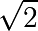 with 100 decimals.
- Calculate 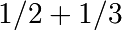 in rational arithmetic.
3.2.1.3. Symbols¶
In contrast to other Computer Algebra Systems, in SymPy you have to declare symbolic variables explicitly:
>>> from sympy import *
>>> x = Symbol('x')
>>> y = Symbol('y')
Then you can manipulate them:
>>> x + y + x - y
2*x
>>> (x + y)**2
2
(x + y)
Symbols can now be manipulated using some of python operators: +, -, *, ** (arithmetic), &, |, ~ , >>, << (boolean).
Printing
Here we use the following setting for printing
>>> sympy.init_printing(use_unicode=False, wrap_line=True)
3.2.2. Algebraic manipulations¶
SymPy is capable of performing powerful algebraic manipulations. We’ll take a look into some of the most frequently used: expand and simplify.
3.2.2.1. Expand¶
Use this to expand an algebraic expression. It will try to denest powers and multiplications:
>>> expand((x + y)**3)
3 2 2 3
x + 3*x *y + 3*x*y + y
>>> 3*x*y**2 + 3*y*x**2 + x**3 + y**3
3 2 2 3
x + 3*x *y + 3*x*y + y
Further options can be given in form on keywords:
>>> expand(x + y, complex=True)
re(x) + re(y) + I*im(x) + I*im(y)
>>> I*im(x) + I*im(y) + re(x) + re(y)
re(x) + re(y) + I*im(x) + I*im(y)
>>> expand(cos(x + y), trig=True)
-sin(x)*sin(y) + cos(x)*cos(y)
>>> cos(x)*cos(y) - sin(x)*sin(y)
-sin(x)*sin(y) + cos(x)*cos(y)
3.2.2.2. Simplify¶
Use simplify if you would like to transform an expression into a simpler form:
>>> simplify((x + x*y) / x)
y + 1
Simplification is a somewhat vague term, and more precises alternatives to simplify exists: powsimp (simplification of exponents), trigsimp (for trigonometric expressions) , logcombine, radsimp, together.
Exercises
- Calculate the expanded form of 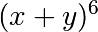.
- Simplify the trigonometric expression 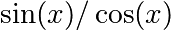
3.2.3. Calculus¶
3.2.3.1. Limits¶
Limits are easy to use in SymPy, they follow the syntax limit(function, variable, point), so to compute the limit of 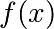 as 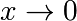, you would issue limit(f, x, 0):
>>> limit(sin(x)/x, x, 0)
1
you can also calculate the limit at infinity:
>>> limit(x, x, oo)
oo
>>> limit(1/x, x, oo)
0
>>> limit(x**x, x, 0)
1
3.2.3.2. Differentiation¶
You can differentiate any SymPy expression using diff(func,
var). Examples:
>>> diff(sin(x), x)
cos(x)
>>> diff(sin(2*x), x)
2*cos(2*x)
>>> diff(tan(x), x)
2
tan (x) + 1
You can check, that it is correct by:
>>> limit((tan(x+y) - tan(x))/y, y, 0)
2
tan (x) + 1
Higher derivatives can be calculated using the diff(func, var, n) method:
>>> diff(sin(2*x), x, 1)
2*cos(2*x)
>>> diff(sin(2*x), x, 2)
-4*sin(2*x)
>>> diff(sin(2*x), x, 3)
-8*cos(2*x)
3.2.3.3. Series expansion¶
SymPy also knows how to compute the Taylor series of an expression at
a point. Use series(expr, var):
>>> series(cos(x), x)
2 4
x x / 6\
1 - -- + -- + O\x /
2 24
>>> series(1/cos(x), x)
2 4
x 5*x / 6\
1 + -- + ---- + O\x /
2 24
Exercises
- Calculate 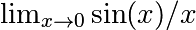
- Calculate the derivative of 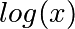 for 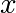.
3.2.3.4. Integration¶
SymPy has support for indefinite and definite integration of transcendental elementary and special functions via integrate() facility, which uses powerful extended Risch-Norman algorithm and some heuristics and pattern matching. You can integrate elementary functions:
>>> integrate(6*x**5, x)
6
x
>>> integrate(sin(x), x)
-cos(x)
>>> integrate(log(x), x)
x*log(x) - x
>>> integrate(2*x + sinh(x), x)
2
x + cosh(x)
Also special functions are handled easily:
>>> integrate(exp(-x**2)*erf(x), x)
____ 2
\/ pi *erf (x)
--------------
4
It is possible to compute definite integral:
>>> integrate(x**3, (x, -1, 1))
0
>>> integrate(sin(x), (x, 0, pi/2))
1
>>> integrate(cos(x), (x, -pi/2, pi/2))
2
Also improper integrals are supported as well:
>>> integrate(exp(-x), (x, 0, oo))
1
>>> integrate(exp(-x**2), (x, -oo, oo))
____
\/ pi
3.2.4. Equation solving¶
SymPy is able to solve algebraic equations, in one and several variables:
In [7]: solve(x**4 - 1, x)
Out[7]: [I, 1, -1, -I]
As you can see it takes as first argument an expression that is supposed to be equaled to 0. It is able to solve a large part of polynomial equations, and is also capable of solving multiple equations with respect to multiple variables giving a tuple as second argument:
In [8]: solve([x + 5*y - 2, -3*x + 6*y - 15], [x, y])
Out[8]: {y: 1, x: -3}
It also has (limited) support for trascendental equations:
In [9]: solve(exp(x) + 1, x)
Out[9]: [pi*I]
Another alternative in the case of polynomial equations is factor. factor returns the polynomial factorized into irreducible terms, and is capable of computing the factorization over various domains:
In [10]: f = x**4 - 3*x**2 + 1
In [11]: factor(f)
Out[11]: (1 + x - x**2)*(1 - x - x**2)
In [12]: factor(f, modulus=5)
Out[12]: (2 + x)**2*(2 - x)**2
SymPy is also able to solve boolean equations, that is, to decide if a certain boolean expression is satisfiable or not. For this, we use the function satisfiable:
In [13]: satisfiable(x & y)
Out[13]: {x: True, y: True}
This tells us that (x & y) is True whenever x and y are both True. If an expression cannot be true, i.e. no values of its arguments can make the expression True, it will return False:
In [14]: satisfiable(x & ~x)
Out[14]: False
3.2.4.1. Exercises¶
- Solve the system of equations 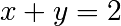, 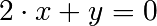
- Are there boolean values
x,ythat make(~x | y) & (~y | x)true?
3.2.5. Linear Algebra¶
3.2.5.1. Matrices¶
Matrices are created as instances from the Matrix class:
>>> from sympy import Matrix
>>> Matrix([[1,0], [0,1]])
[1 0]
[ ]
[0 1]
unlike a NumPy array, you can also put Symbols in it:
>>> x = Symbol('x')
>>> y = Symbol('y')
>>> A = Matrix([[1,x], [y,1]])
>>> A
[1 x]
[ ]
[y 1]
>>> A**2
[x*y + 1 2*x ]
[ ]
[ 2*y x*y + 1]
3.2.5.2. Differential Equations¶
SymPy is capable of solving (some) Ordinary Differential. To solve differential equations, use dsolve. First, create an undefined function by passing cls=Function to the symbols function:
>>> f, g = symbols('f g', cls=Function)
f and g are now undefined functions. We can call f(x), and it will represent an unknown function:
>>> f(x)
f(x)
>>> f(x).diff(x, x) + f(x)
2
d
f(x) + ---(f(x))
2
dx
>>> dsolve(f(x).diff(x, x) + f(x), f(x))
f(x) = C1*sin(x) + C2*cos(x)
Keyword arguments can be given to this function in order to help if find the best possible resolution system. For example, if you know that it is a separable equations, you can use keyword hint=’separable’ to force dsolve to resolve it as a separable equation:
>>> dsolve(sin(x)*cos(f(x)) + cos(x)*sin(f(x))*f(x).diff(x), f(x), hint='separable')
/ _____________\ / _____________\
| / C1 | | / C1 |
[f(x) = - asin| / ------- + 1 | + pi, f(x) = asin| / ------- + 1 | + pi,
| / 2 | | / 2 |
\\/ cos (x) / \\/ cos (x) /
/ _____________\ / _____________\
| / C1 | | / C1 |
f(x) = -asin| / ------- + 1 |, f(x) = asin| / ------- + 1 |]
| / 2 | | / 2 |
\\/ cos (x) / \\/ cos (x) /
Exercises
- Solve the Bernoulli differential equation
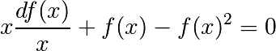
- Solve the same equation using hint=’Bernoulli’. What do you observe ?